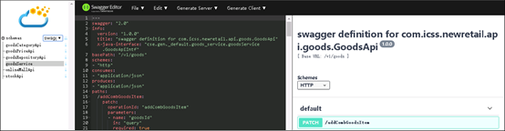

使用 inspector 模块查看契约
inspector 提供了用户查看、下载契约，生成文档和对API接口进行测试的功能。这个功能直接在微服务提供，用于弥补通过服务中心查看契约和对接口进行测试的不足。inspector功能后续会做进一步增强，除了管理契约，还可以观察微服务的内部状态，帮助定位一些常见问题。
启用inspector
在项目中启用inspector很简单，只需要在pom中增加如下依赖即可。
<dependency>
<groupId>org.apache.servicecomb</groupId>
<artifactId>inspector</artifactId>
</dependency>
如果项目中依赖了 solution-basic , 这个模块会自动包含进来。
引入依然后启动微服务即可使用相关契约管理功能。下面假设微服务监听的端口为8080。
使用inspector功能
inspector提供了管理界面，集成了swagger编辑器。输入 http://localhost:8080/inspector/index.html 后，出现如下界面。
SWAGER编辑界面

在SWAGGER编辑界面，可以对接口进行测试。
HTML界面

HTML页面提供了更容易读写的格式，方便开发者查看接口说明。
输入 http://localhost:8080/inspector/schemas 可以查询所有的schema列表
["goodsRepositoryApi","goodsService","onlineMallApi","stockApi","goodsCategoryApi","goodsPriceApi"]
输入 http://localhost:8080/inspector/download/schemas?format=HTML 可以下载文档。format支持HTML和SWAGGER两种格式。这个接口会下载所有契约文件，打包为zip格式。
输入 http://localhost:8080/inspector/schemas/goodsService?download=false&format=HTML 可以查看、下载单个契约文件。
保护 inspector 接口的访问控制
该功能被设计为辅助开发、设计、运维，第一次访问的时候加载很慢，不建议开放给最终用户大规模并发访问使用。 如果在生产环境带入 这个功能，可以通过必要的隔离措施和访问控制，限制最终用户对于这个接口的访问。
可以使用 java-chassis 提供的线程池隔离功能， 将这个服务放到独立的线程池，避免对其他服务的访问产生影响。具体操作步骤包括，
定义线程池：
<bean id="servicecomb.samples.executor.groupThreadPool" class="org.apache.servicecomb.core.executor.GroupExecutor"
init-method="init"/>
启用线程池:
servicecomb:
executors:
Provider:
inspector: servicecomb.samples.executor.groupThreadPool